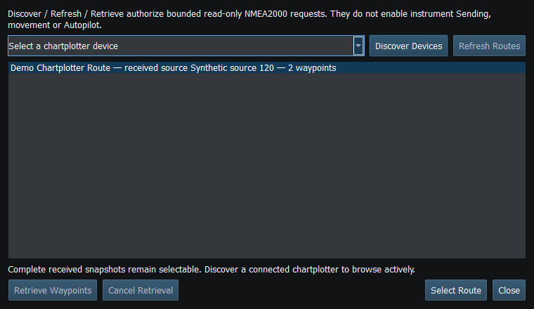

Bounded chartplotter service traffic has separate authorization from ordinary instrument Sending. A connected RX/TX-capable adapter is a capability, not permission to issue requests. Viewer may receive and inspect routes; its ordinary instrument TX remains disabled.
| Action | Does not imply |
|---|---|
| Configure RX/TX-capable transport | Instrument Sending or service authorization |
| Enable Sending | Implicit route retrieval authorization |
| Authorize route request | Unrelated instrument TX, route execution or a permanent grant |
| Receive/retrieve route | Selection, Autopilot, vessel movement or chartplotter navigation activation |
Stop/F12 revokes Sending and pending bounded service authority. Disconnect, mode/lifecycle changes and invalid identity/correlation cannot leave a request running indefinitely. Already submitted transport frames may have left the process; stopping is not a way to erase traffic already on the bus.
Requests use limited retries and deadlines. For a timeout or negative acknowledgment, check target identity, service compatibility and the connection. Do not guess database IDs or proprietary commands. Actisense active route requests remain disabled in Debug and Release.

Figure 81. Select Route requires a complete snapshot; Discover, Refresh Routes and Retrieve Waypoints have their own authorization and cancellation. Click to enlarge.
Route Overview · GPX/KML Import · GPX/KML Export · Selecting Chartplotter Routes · Navigation Measurements · Connection Troubleshooting · Enable, Dispatch and Sending · Engineering Units